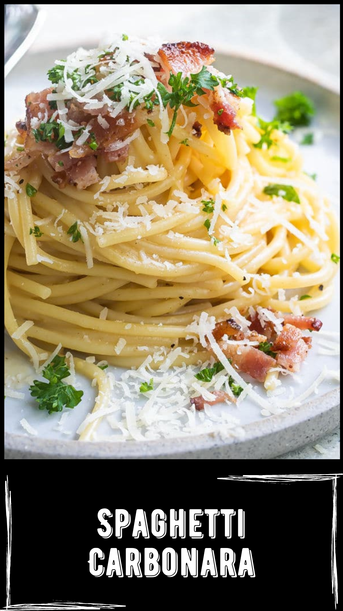

Resep:
- Pertama, didihkan air di dalam panci dan beri sedikit garam dan satu sendok makan minyak goreng. Jika sudah mendidih, bisa merebus spageti hingga empuk, kurang lebih selama 15 menit saja.
- Kemudian panaskan mentega atau margarin dan tumis bawang putih dan bawang bombay hingga harum. Di sini bisa memasukan smoked beef dan aduk rata.
- Setelah itu, tuang susu cair dan keju dan aduk rata, lalu beri garam, lada, peterseli, oregano dan aduk rata. Periksa rasanya jika sudah pas maka bisa memasukan spageti dan aduk rata.
- Setelah itu, tuang larutan maizena dan aduk rata.
- Terakhir kocok telur dan campur dengan sedikit susu cair. Masukan kocokan telur dan aduk-aduk. Jangan biarkan telurnya terlalu matang karena nanti hasilnya jadi kurang creamy.